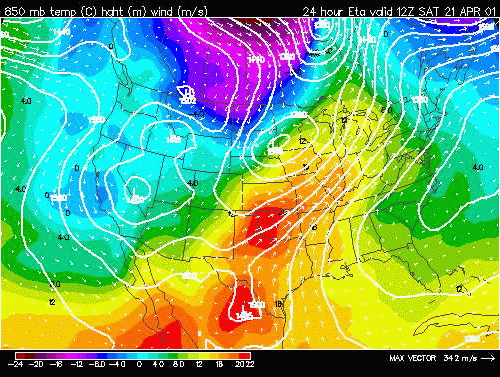
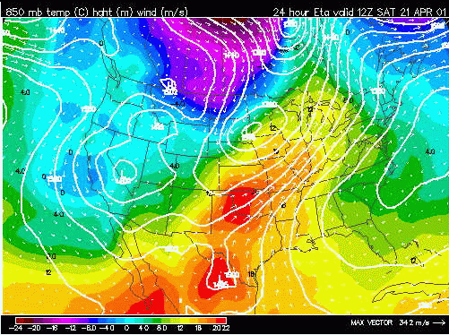
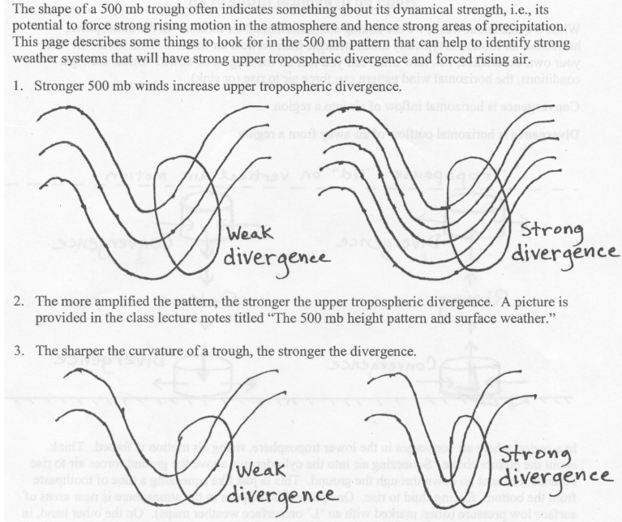
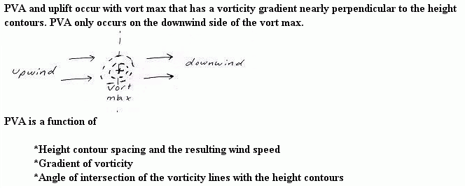
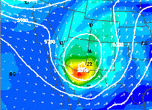
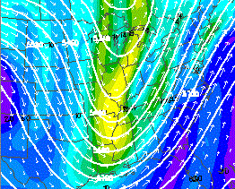
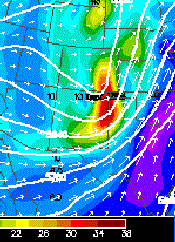

One term in the omega equation is thermal advection. This essay will be interested in the operational meteorology interpretation of thermal advection and the contribution it gives to vertical motion.
Thermal advection can be divided into Warm Air Advection (WAA) and Cold Air Advection (CAA). We can also divide the troposphere in the Low Levels (LL) which is between the surface and 550 millibars and the Upper Levels (UL) which is between 550 millibars and the tropopause (~150 millibars). This gives us 4 operational interpretations of thermal advection. Each of these is discussed below along with the operational significance.
1. Low Level Warm Air Advection (LL WAA)- Warm air advection is the movement of warmer air toward a fixed point on a horizontal plane. Adiabatic warming due to the air sinking and also air warming at a fixed point due to solar radiation are not WAA. Remember that thermal advection is always about a horizontal plane. LL WAA is common behind warm fronts and ahead of cold fronts.
LL WAA contributes to rising air. Do not confuse the adiabatic cooling from rising air with WAA. The layer in which WAA occurs will generally warm more from WAA than will cool by the rising air process although the rising motion exacerbated by other lifting mechanisms, radiational cooling and evaporational cooling can partially and sometimes completely offset the warming from WAA.
LL WAA contributes to rising air because warm air is less dense than cold air. Since warmer air expands to a larger volume than cold air, this expansion in the low levels pushes the air above the low levels up also. Keep in mind that this upward motion is slow and on the synoptic scale. The rate that the air rises is much less than the rate the air rises in an updraft of a thunderstorm. Synoptic upward vertical motion varies generally between 1 and 30 centimeters per second.
An example of LL WAA is shown in the state of Indiana:

2. Low Level Cold Air Advection (LL CAA)- Cold air advection is the movement of colder air toward a fixed point on a horizontal plane. Adiabatic cooling due to air rising, evaporational cooling and also air cooling at a fixed point due to radiational cooling are not CAA. LL CAA is common behind cold fronts.
LL CAA contributes to sinking air. Do not confuse the adiabatic warming from sinking air with CAA. The layer in which CAA occurs will generally cool more from CAA than will warm by the sinking air process although the sinking motion exacerbated by other sinking mechanisms, condensational warming and the warming of air by solar heating can partially and sometimes completely offset the cooling from CAA.
LL CAA contributes to sinking air because cold air is denser than warm air. Since cooler air is more contracted than warmer air, this contraction in the low levels forces a sinking motion aloft to compensate for the reduction of volume in the LL. Thus, in the ideal case the skies will clear behind cold fronts.

3. Upper Level Warm Air Advection (UL WAA) and Upper Level Cold Air Advection (UL CAA)- Thermal advection is generally much less significant in the upper levels as compared to the low levels. The upper levels are much more uniform in temperature and the flow is more zonal and geostrophic thus thermal advection is usually weak. For LL WAA to produce a rising motion, the WAA must decrease with height. Similarly, for LL CAA to produce a sinking motion, the CAA must decrease with height. This generally always occurs since UL thermal advection is weaker than LL thermal advection. From an operational meteorology standpoint, UL thermal advection can be ignored in most cases.
IMPORTANT POINTS:
a. In complex situations differential advection occurs (WAA and CAA both occurring in the LL (i.e. surface to 700 mb WAA and 700 mb to 500 mb CAA or vice versa)). In these cases the magnitude of each thermal advection needs to be analyzed.
b. There is not a direct relationship between thermal advection and resultant vertical motion in the atmosphere since other lifting and sinking mechanisms can complicate the picture (i.e. upslope flow, LL CAA, and divergence aloft occurring at same time). In these cases the magnitude of each lifting or sinking mechanism needs to be analyzed (often done by model output of resultant UVV over forecast region).
c. Evaporational cooling, condensation warming, solar heating, complex topography, and radiational cooling contaminate thermal advection. A forecaster will examine these contaminating factors to determine the actual magnitude of the resultant thermal advection. For example, the warming and uplift from LL WAA will be reduced in cases where precipitation is falling into the low levels and cooling the air through evaporation.
The vorticity advection term is also called the upper level divergence term. The upper levels generally extend from 550 millibars to the tropopause. Upper level divergence occurs when a mass of air is pulled away from a region faster than that mass can be replaced. This most commonly occurs when the upper level wind field is strong and meridional (high amplitude upper level waves).See image below for examples...

An operational forecaster locates regions of upper level divergence by locating the divergence sector of a vorticity gradient near the LND (Level of Non-divergence). The LND is closest to the mandatory level of 500 mb, thus upper level vorticity is usually plotted on this prog. The LND is the general level that separates the low levels of the troposphere from the upper levels. Vorticity advection is best assessed near the LND.
A process that creates upper level divergence is DPVA (Differential Positive Vorticity Advection). Click here for for additional information on DPVA.
Since the wind speed is generally higher in the upper levels of the troposphere as compared to the low levels of the troposphere within regions of PVA, a forecaster can usually take for granted that the PVA is differential (increasing with height). Thus the D in DPVA is often left off.
An operational forecaster recognizes PVA by locating:
a. The downstream region of relatively higher vorticity values along with the gradient of vorticity values,
b. The wind speed of air through the gradient of vorticity, and
c. The angle the airflow goes through the vorticity gradient

PVA generally occurs in the downstream region (region where airflow is moving away from highest values of vorticity) of a vort max (left image below) or vort lobe (right image below).


PVA is maximized by the combination of:
a. High values of vorticity, with more importantly a large rate of change (gradient) of vorticity,
b. A strong, downwind of vort max, airflow through the high gradient of vorticity,
c. An airflow perpendicular to the vorticity gradient
Below is an example that should help clarify this process an operational forecaster goes through in locating PVA. The prog below shows 500-millibar vorticity.

The vort max and the region of highest vorticity values are located in the red shading mostly on the New Mexico/Texas Panhandle border. The gradient in vorticity across the vort max is fairly sharp. The value of vorticity changes over 10 units over a distance of 100 miles.
That region of the vort max/vort lobe that experiences uplift is the downstream portion. An operational forecaster will draw a line through the vort max and perpendicular to the airflow. It is the region to the east of this line, in this particular example, that is experiencing PVA (Texas Panhandle and extreme southeast Colorado). Since this shortwave is moving toward the east, the entire Texas panhandle and western Kansas will experience PVA over the next several hours. The airflow through the vort max is strong and close to perpendicular, especially on the southern side of the region of high vorticity where the horizontal wind vectors are longer. This helps maximize the amount of vorticity advection at this location.
DPVA leads to rising air on the synoptic scale. Thus, a forecaster locates these regions of enhanced uplift in order to determine areas that are most likely to receive precipitation. Precipitation as a result of DPVA alone is often termed dynamic precipitation. This precipitation tends to be high based also since the lifting is most intense in the upper troposphere (assuming DPVA is primary lifting mechanism). Severe weather is enhanced where strong DPVA overrides low level moisture, instability and low level WAA.
A process that creates upper level convergence and thus sinking air is DNVA (Differential Negative Vorticity Advection). NVA generally occurs in the upstream region of a vort max or vort lobe. Usually when strong PVA is found a region of strong NVA will be coupled upstream from the PVA. The same mechanisms that maximize PVA also maximize NVA. The only difference is that NVA occurs in the region the airflow is approaching higher values of vorticity (upstream region) and PVA occurs in the region the airflow is moving away from the higher values of vorticity (downstream region). From the example examined previously, NVA is occurring in central/eastern New Mexico and central Colorado. NVA enhances sinking air, thus precipitation and severe weather is less common in the NVA region of a vort max.